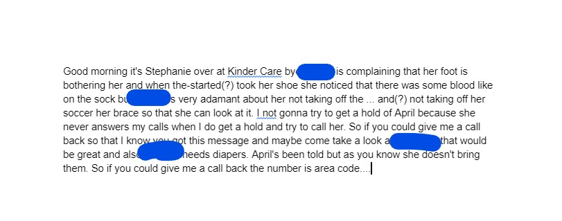
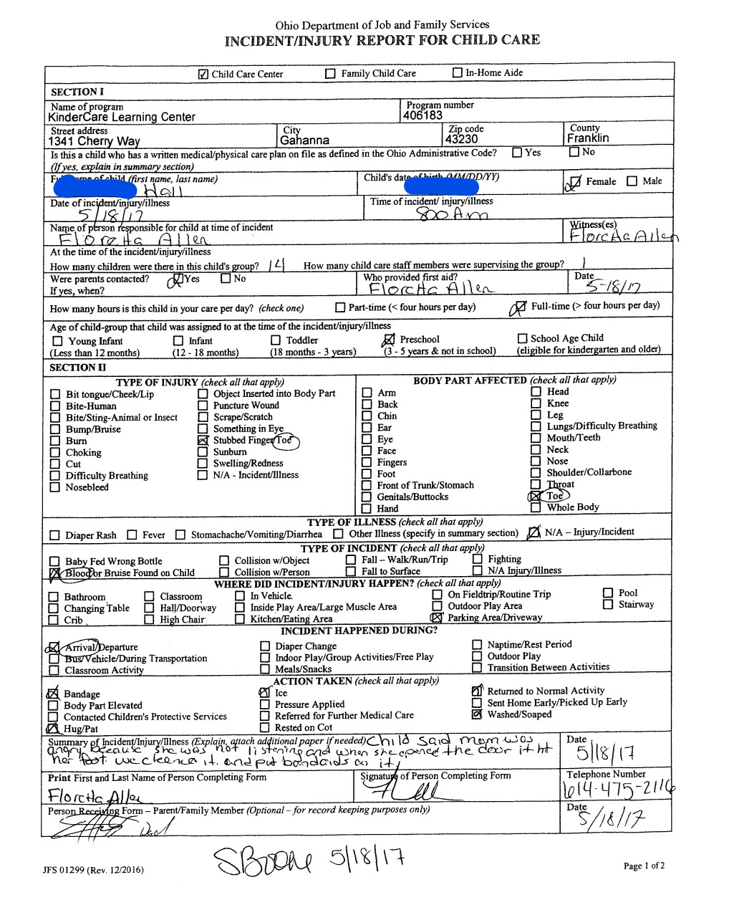
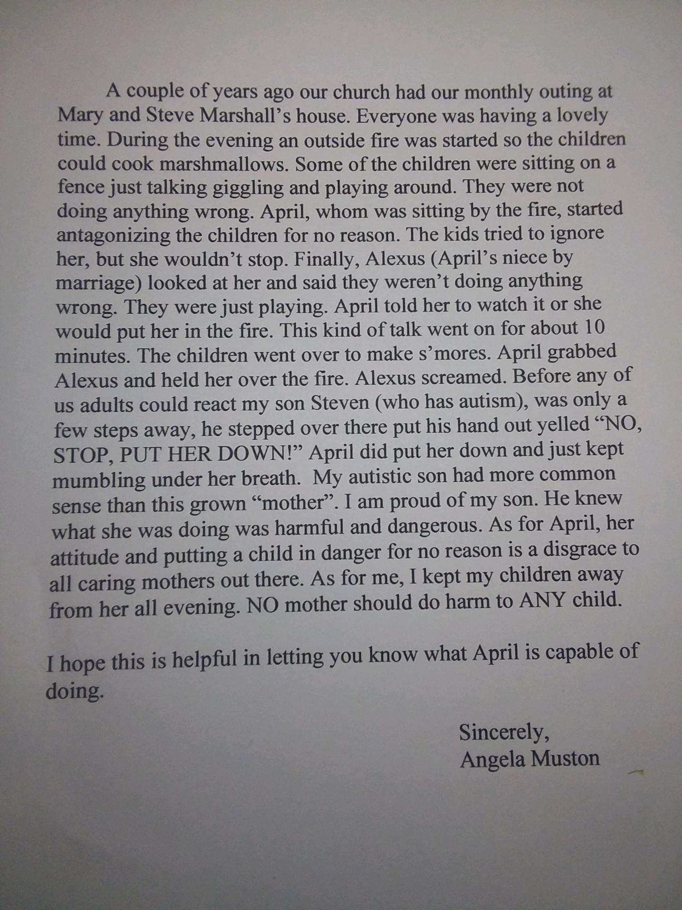
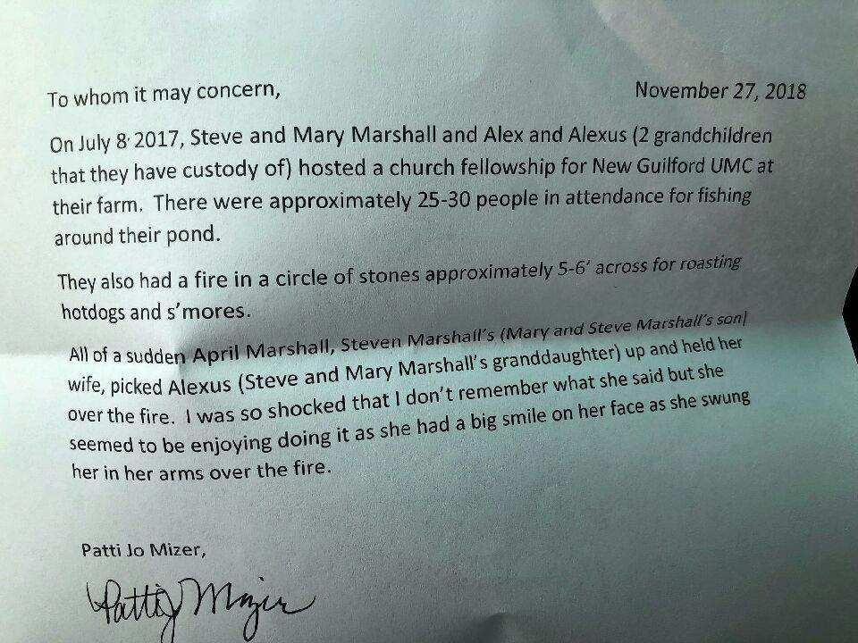
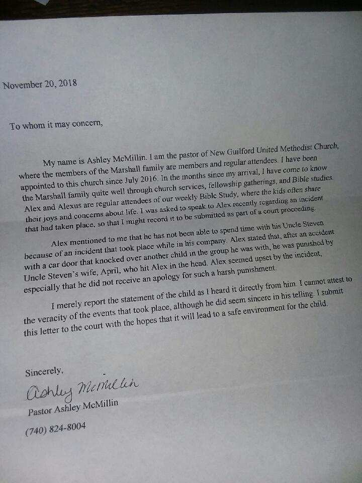
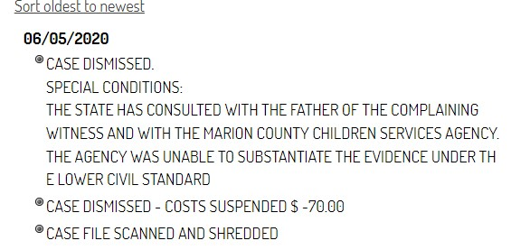
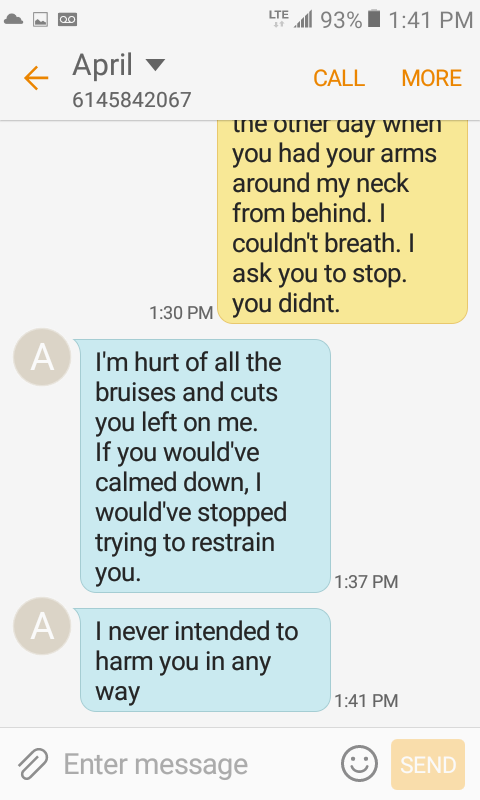
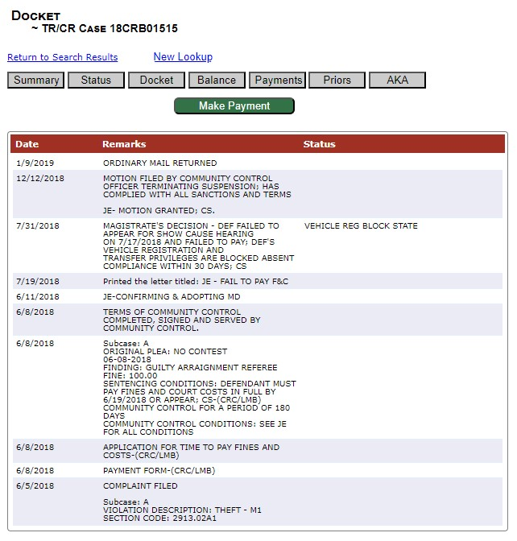
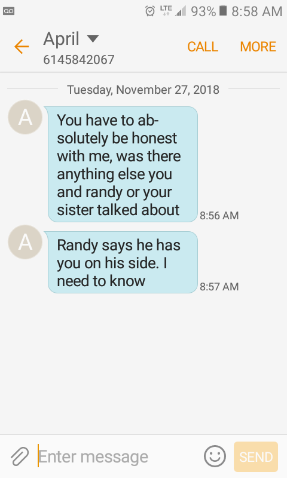

April Terry
For identificiation purposes, the April Terry described by this page resides at:
859 Davids Street
Marion, Ohio 43302
Her date of birth is 4/29/1990
***Notice: this site will be updated with information regularly while this notice is in place. There's a lot to upload. I'm using [placeholders] throughout.***
If you have any relevant information to provide regarding April Terry please email aprilterryinformation@gmail.com. If you have any evidence or statements regarding April Terry's criminal activities, please contact the Marion Ohio Police Department at (740) 387-2525 and make a report.
If there were a single lie in this entire page, April would try to have me on slander. There isn't.
She. Is. A. Monster.
Who are you?
Freer Hall, April's former boyfriend and father to two of April Terry's four children.
In defense of myself, I have been going to therapy for years now. I've had two psycological evaluations. I have been diagnosed with situation depression and anxiety regarding April torturing my children, and ADHD but that's no surprise. I am currently being treated for Complex PTSD. I have followed every recommendation for treatment set forth by the mental health professionals who have been helping me.
I would rather be crazy than my children be in harm's way. Alas, it is not so. Both evaluations have come back essentially the same - I'm traumatized over the events that have transpired with my children, and I am not in any way paranoid or delusional.
Doesn't this make you look bad?
I've been hearing about my children being abused for over six years, and told repeatedly to just keep my head down and let the system handle it. If someone cares more about my airing of April's behavior than her actual behavior, at this point I simply do not care about their opinion.
So what does this accomplish?
First off, we know April has been spreading lies about my wife and I, and our friends and family, for years. We've met several other parents who have told us as much. I've personally witnessed April's mother, Delaware County JFS Employee Judy Terry, horribly disparage me to my own children. Hopefully this can clear some of it up, because regaling each individual person with the truth has become very time consuming.
Primarly, this should turn April into a social pariah. This should hurt her chances of obtaining and maintaining employment, housing, or literally any sort of help from anyone. That sounds harsh and heartless... but she preys on the goodwill of others, manipulates situations and people for her own benefit, tortures children for fun, and is generally an all around narcissistic sociopath. Keep this woman well away from you, your kids, and anyone or anything you care about.
I'm not being coy about this, there is no hidden agenda: the goal here is to expose April Terry, hopefully encourage more people to come forward, and ensure her reign of terror comes to an end.
My personal belief is that April falls under the both the NPD and APD diagnosis of the DSM-5, however as you'll read below I have been wholly unable to get her into an actual evaluation despite several attempts. Without naming names, at least one mental health professional who has interacted directly with April Terry has confirmed that they "don't think I'm wrong" but they are not in a position to provide an official diagnosis. Perhaps this site will serve as a springboard for someone with the proper authority to make a diagnosis happen.
Site Key
For transparency, information provided on this site will be labeled to the best of my ability. It may fall into one or more of the following categories:
- Evidence: actual documentation or other evidence. Facts previously established. Things that are not simply my opinion or narrative.
- Speculative: things I believe may possibly be happening based on my experiences and/or documented evidence.
- Hearsay: something I have been told by someone else. I will provide corroborating evidence if possible. Take all hearsay statements with a grain of salt.
- Narrative: my narrative on the situation, used only as necessary for people to understand what's going on here. These are events and facts recalled to the best of my ability.
- Child A: First child of April Terry and myself, born 2011
- Child B: Second child of April Terry and myself, born 2014
- Child C: Child of April Terry and Steven Marshall, born 2016
- Child D: Child of April Terry and Mason Lawson, born 2022
Context
I tried to put things in roughly chronological order, but there's a bunch of timeline overlap with different topics. [I'll come back and add more dates to things later]
TL;DR:
April Terry is an absusive, amoral criminal who will hurt anyone for fun or profit and then cry and play the victim. To the best of my knowledge, she's a 6' tall, 300-400 pound sadist who has asaulted five children and two adults just that I've been made aware of. Both the Marion Police Department and Marion County Children Services have investigated and found evidence of her abusing children. Why isn't she in prison? Read the long form.
The long story
April Terry and I were together for nearly five years. We had one child in that time, who will be referred to as Child A, who was born in 2011. When I left her, she was pregnant with our second child, who will be referred to as Child B, who was born in 2014.
April Terry was physically and emotionally abusive towards me during our time together, increasingly so as our relationship progressed. I did not know how to recognize this at the time, and have been in therapy the last several years regarding this and other April-related scenarios. All I recognized at the time is that our relationship had become extremely toxic, and somehow I had to get out. She would do things like punch me, slap me upside the head, or disparage me, then say things to the affect of "if you didn't make me angry I wouldn't have to hurt you." She would also ensure I was isolated, "punishing" me for speaking with friends or family behind her back if she found out about it.
Initially, we were simply to be civil about child arrangements. I also provided her with financial support. There was no legal agreement in place. Shame on me.
Never assume that a violent partner is only violent because of you. You are not responsible for the actions of anyone else. I cannot stress enough that you need to reach out to people who can help you if you are in such a situation.
As a note: I've been told outright by April's mother, Judy Terry, currently employed by Delaware County Job and Family Services, that "I never gave her a dime" - during the proceedings of our initial custody case, I was able to provide documentation to the many thousands of dollars of direct support I was providing. Her apartment was in my name and being paid by me. Her utilities, the same. Her car and insurance, the same. Our phones, while in her name, were being paid directly by myself. I even had receipts from her bank with her personal checking account number where I was making additional cash deposits on top of all these bills to provide for her for several months post-breakup. So, Judy: your reality is incorrect.
From some of what I've been able to gleam, this narrative was pushed by April on Judy and others, and Judy may have also been providing April with money during this time. April did not work for more than six months after us splitting up (and some time before). If Judy wasn't providing her with support, where then did she think April was coming up with the funds to live? There are many times I want to see Judy Terry, employed by Dewalare County, Ohio, as a victim here, but given what I have seen and heard about her covering up her husband's abusive behavior and then later her willfully lying in court for April, it's hard to feel bad. She's an adult.
Late in 2014 April began placing extreme restrictions on my ability to see my own children. I finally filed pro-se (that is, without an attorney) for a simple shared-parenting arrangement so I could be with my girls regularly.
At that time, I had taken a contract with a law firm. She showed up to the first hearing with an attorney and attempted to get me to agree to extremely unfavorable terms.
The law firm I was working for agreed to represent me pro-bono (meaning I had, at this point, "free lawyers"). April's attorney disappeared from the case. This is important: if I had wanted to bully her or be unfair, I could have at this time. Instead, we filed a shared parenting agreement and skipped out on all the nasty courtroom stuff.
[insert court records here]
April was then evicted and her car repossesed. Instead of flexing some of that legal muscle, I half-gave her a car (I made half the payments) and made major personal concessions to support her completing school - as part of our agreement, she was to obtain her Medical Billing and Coding Certification, which she did. If anyone knows and can provide evidence or testimony as to why she does not or perhaps cannot work in that field, please contact aprilterryinformation@gmail.com.
The "Toenail" incident
May 18th, 2017 I received a call from the preschool our children attended. Child A had a mild injury. I immediately proceeded to the facility. Child A had half of her big toenail flipped over backwards inside her shoe, sock, and orthotic brace. Cringy, but not the worst injury. However, the statements made by Child A, at the facility, in front of facility staff, after having just spent a solid week with April, and with zero prompting from me, indicated that this may have been an abusive situation. Essentially, April had opened the door to the facility in a hurry and hit the top of Child A's foot. That in and of itself, still not a serious concern. However, she then stated "mommy said it was my fault she hurt me".
 Queue my PTSD response, though I wouldn't know what that was for some years yet.
I immediately proceeded to speak with an attorney. They advised I attempt to negotiate directly with her before we blow it up into a big expensive legal mess. There were several other small things, things that I know now were big red flags, leading up to this point, but that incident was the eye-opener that I had to protect my children from their own mother.
As this was my day to start my parenting time, I picked both children up from preschool later that day. Child A was still distraught from the morning's events, saying repeatedly "it's my fault mommy hurt me".
[I actually have a recording of part of this but not so sure I want to publish it and I honestly can't watch it without breaking down.]April was getting married 2 days later. Once calmed, I decided to be passive for the time and confront her about it after her honeymoon, which I did. She agreed to meet in public and we discussed the issue. I asked that she remand her half of the custody to her mother in the short term, take a parenting class, get a psycological evaluation and seek counselling.
She said, and I'm paraphrasing here, "no". I filed for a change in custody, she lawyered up. When we later offered to drop any questions of custody if she did the above, she instead spent more than a year and likely many thousands of dollars fighting in court to avoid getting a psycological evaluation. To this day, to my knowledge, she has not been officially, professionally evaluated by anyone.
The "Bruised Face" incident
Child A was then taken to her pediatrician by April with bruising to the face, where April claimed that she believed I had attacked my daughter. At this time, we were essentially week/week split parenting time, meaning I wouldn't see them for 7 days in a row, then see them for 7 days straight.
[child A medical record for facial bruising]This is partially speculative, and partially based on what I've heard from her now ex-husband and his family: April beat Child A for causing her mother this problem, then tried to blame it on me to throw off any case brought against her. I was not aware of this doctor visit for several months after the fact, and I do not recall any such injury to Child A when she did return to me.
The "Daycare Conspiracy" issue
Daycare/preschool would start seeing problems, reporting issues, or confronting April. April would start hurling accusations from conspiracy to sexual misconduct at them and then switch daycares. Which leads into:
The Therapy issue
April accused me (to me) of abusing our children, and personally signed many daycare reports where Child A was being outright violent and a danger to her classmates. I got Child A evaluated and put in therapy for this, and took a 14-week parenting class through Nationwide Children's Hospital called "Incredible Years" - ABSOLUTE PLUG HERE - if you have young children and the ability to take this course, do so. It was life changing.
April started fighting tooth-and-nail to stop the therapy sessions. Keeping in mind, when the therapy started, no accusations had been leveled against April yet. She would call and cancel appointments - NCH had to notate the account to not change my phone number to her phone number, and to call me to confirm any cancellations.
She would later claim that Child A never had any violence issues. She would later claim she was never made aware of any of these issues (see her signature? yeah.) One of the few concessions I ever won in court was a direct order for the children to maintain their therapies.
April and I were also both court-ordered to seek therapy. I did immediately - this lead to a recommendation for evaluation, which I did immediately. I have been consistently going to therapy ever since. I now have a standing weekly appointment with my therapist.
Keeping in mind that my initial push was largely to get April evaluated and to seek help for her "violent outbursts", she didn't. When questioned about this under oath she claimed that she was unaware of the order, didn't think she had to obey that order, and then that she didn't think she needed therapy, pretty much all three different exuses in the same breath:
[HEARING TRANSCRIPT]Part of the order was to allow our therapists to communicate with the girls' therapist at the time. While April would reportedly go to 3-5 token therapy sessions and play the victim (per ex-husband) some time much later, no authorization was given for her therapist to communicate with the other therapist.
The "School Placement" plot
This is going to sound absolutely paranoid, and on its own wouldn't hold any water. But it's a thing.
In my ignorance I let April have school placement. It seemed like a small issue as neither child had started school yet, I lived in inner city Columbus area and she in Delaware area at the time. Perfectly reasonalbe setup.
Then she moved to Utica. Then said I could have school placement if I got into a decent district, which caused me to move very unfavorably to a smaller apartment at a higher rent. She then backed out, because I didn't get it in writing. Shame on me.
If a parent is causing a child to miss school due to transportation issues, this is grounds for a change in parenting time. I was going to have to drive roughly an hour each way, twice a day, five days a week, every other week, while working a "9 to 5" job, to get Child A to school. April was banking on me being unable to do this, which would result in my loss of parenting time, which would trigger a recalculation of child support.
April reportedly told the GAL involved in our case that she was staying in Utica-area permanantly, and the GAL told my wife and I to just buy a house near April. April moved to Marion shortly thereafter.
The future wife and I come to the open house for Child A. While there, April "kindly offers" with her signature smirk on her face to pick up Child A from school and keep her until I can get off work to come pick her up. This sounds like just a beautiful piece of cooperative parenting if you're looking at it from the outside. The reality is, if I'm forced to take her up on it, it would destroy my position that she is harming the children ("you can't really think that if you're giving her extra time") and gives her an easy argument for being awarded more parenting time ("they're already with me every day, might as well just make it official").
"No, thanks, we've got it covered" and then April proceeds to throw what I can only describe as a temper tantrum, feet stomping and all like a massive child, right there in this classroom. Her husband, carrying their little baby, walks out beet red with embarassment. The moment you undermine some plan of April's, she absolutely loses her shit. Ask some Marion Detectives about her "switch" - she goes from kind and disarming making the devil cringe in a heartbeat.
In the parking lot, in what is so far as I'm aware the only conversation ever between the two, my future wife and April have a "discussion". I am told April tried to talk her out of staying with me... probably trying to salvage her original plan. It's no secret that my future wife volunteering to help drive my child to and from school every day was monumental. Such selfless devotion is no small part of the reason I put a ring on it. I love you, beautiful.
The "Curtain Rod" incident
In June 2019 Child B provided a story to myself and others that she had been picked up by the throat, pinned to the wall, and smacked twice with a curtain rod, then grabbed by the shoulder and squeezed by April Terry following an incident where her and Child C were playing and accidentally pulled down the curtains in their bedroom. Child A was not witness to this event. April did confirm the curtain being pulled down, but denied any wrongdoing or abuse on her part.
I did get a protection order for a few weeks over this incident, but ultimately the lack of evidence caused it to be dropped. Children Services "screened out" this report and did not investigate.
[er report] [police report]The "Salt Gun" incident
Shot her kids with an air-powered salt gun designed to kill bugs. The story I was told was of her attacking Child A, B, and C with it, and specifically of having Child C face down, on the floor, shirtless and weeping while April took great joy and laughed about shooting her in the back with it. This story was told to me by both Child A and Child B, together and unprompted, circa 2020. I reported this to MCCS.
April later claimed in court to have no knowledge of any such weapon ever being in her home.
Steven (then-husband) has told me she asked him to hide the weapon in the garage one day, and then it later disappeared. He was able to provide the Amazon receipt for the weapon, but of course that's not beyond-a-reasonable-doubt evidence against April using it at any time.
The "Bonfire" incident
Held a child over a fire in front of many witnesses.


The "smacking the nephew" incident
[texts from ex husband] The "Broken Arm" incident
{BROKEN ARM} [medical reports] [police report]Marion Municipal Court Case # CRB2000183
[investigation into MCCS] [charges]There are many reasons that a case can be dismissed. The bar for criminal conviction is rightfully very high. The only reason anyone cared to put on the docket was this:

The "Sheriff Deputy" confrontation
Not putting up any names, or identifiers, or what agency, etc. I think they were just a young, naive deputy who was lead to believe they were being the "white knight" in this situation. It was handled to my satisfaction, assuming nothing further comes of this.
I had kept Child A and B out of school a few days while trying to figure out how to file the emergency custody thing without bungling it up. The reason for keeping them out was that if they went, April would get her hands on them. This was the advice I was given by people from certain free consultation services.
I then received a call from a Sheriff deputy the very first day - within hours of them missing school, really - who told me outright they were going to have me brought up on charges of truancy if I didn't bring them in to the school. That was definitely unprofessional and probably illegal - I hadn't actually broken any laws at that point. Truancy is a far more rigorous standard than "your kids were late for school". I just did a "well that was weird" and chocked it up to some johnny-law badass being overzealous.
Fast forward a couple days, I have the emergency custody order in hand granting me full, sole custody rights to Child A and Child B effective immediately. I bring them into school.
April shows up. She immediately has the school summon this particular Sheriff deputy by name. This deputy, now with the ECO in their hands, repeatedly tells me that April can take the children home with her, and starts lawyering reasons why this ECO doesn't prevent it. Queue fifteen of the absolute most harrowing minutes of my life as I am full-out panicking and contacting everyone I know with a remotely law-enforcement or legal background trying to stop this. Why was this deputy going to let the woman who broke my daughter's arm walk out of this building with them despite a court order to the contrary?
Finally, after several back-and-forths, the school principal has this deputy replaced with another, let's call it a more "seasonsed" deputy. This deputy takes all of about sixty seconds to read the ECO, concludes what it says it what it says, and then escorts April out of the building, not to return for a very long time.
I later got the feeling that the first deputy got a "stern talking to" about the incident and I've not had any further incidents regarding that individual.
When I say April is manipulative, I mean it.
The "Amber Hickman" problem
While I had issues with some of April's family, Amber Hickman initially was not one of them. Even when I had protection orders or emergency custody, she was allowed to continue interacting with our daughters in some capacity. It went so far as to having several of April's family members attend a birthday party while our girls were under a protection order against April.
So then comes out, from the court, that Amber tried to get my children to lie to the magistrate. Turns out she'd also falsified a report to MCCS likely trying to poison them against me while they were supposedly investigating April. This will become very relevant.
Amber Hickman is an owner, along with her husband, of MasterMind LLC, which to my knowledge does mostly government contracts. It is based out of Delaware County, Ohio.
[court findings]This is purely speculation, but for anyone who's ever worked with government agencies, having connections can get you lots of "special treatment". I don't have any direct evidence that anything like that is what happened here, but I also don't have any reasonable examplaination for what you're reading, so what would you think is going on here?
Suffice to say, despite being a liscensed nurse and mandated reporter caught manipulating children to cover for child abuse, Amber Hickman hasn't lost her liscense or faced any repercussions whatsoever so far as I'm aware.
The "Judy Terry" problem
Judy Terry is April's mother. She works for Delaware County JFS and has lied under oath for April. Honestly it was so pathetic what April did to her in that court room that I actually felt bad for her in the moment, she looked distraught and confused as April tried to first physically with gestures, then verbally out loud in the court room, coach her own mother on what to say while questioning her... but she's helped April cover for beating her own grandkids, so she can go straight to hell.
The "Strangling" issue
Possibly the only real documented case of physical abuse against him, though he claims many more, April attacked and strangled her then-husband Steven Marshall nearly unconcious. Text messages are notoriously difficult to use in court cases because it's hard to prove someone else didn't just happen to send incriminating texts from your phone. However, in this case, all of these texts where confirmed, by April, under oath, to have been sent from her to her husband.
Steven was upset, walked away from an argument, April assaulted him from behind (being much larger than him) by wrapping her arm around his neck. He said he was blacking out from being unable to breathe.
 - sounds a lot like "if you didn't make me angry I wouldn't have to hurt you", doesn't it?
Steven has on numerous occasions expressed to me his fear of reporting April for abuses against himself or our children for fear that April will simply blame them all on him, and the "police always take the woman's side." While I don't personally believe that's always the case, I understand the sentiment, and I've faced this myself on multiple occasions.
I would describe my relationship with Steven as "cautious" - he has previously falsified a police report against me, allegedly at April's direction. Steven is, kindly, not the brightest crayon in the box so to speak. His refusal to come forward, or even show up for court in a key hearing, has left me without one of the few adult eye winesses to her abuses against my children time and again. But in all the time he was living with my children, neither Child A nor Child B ever spoke a single bad word about him. My wife and I have heard many stories about him making sure they ate, about him trying to help with their homework, and generally being a great step-dad asside from this whole April-is-a-monster situation.
Playing soldier
Mason Lawson is the latest of April's known relationships. He has told my children that he'd "protect them from me," whatever that was supposed to mean. He also likes to make them do "army drills" as punishment.
That's right, this "man", living rent-free in the house of the man he cucked, reportedly likes to play "real soldier" after playing Call-of-Duty-Soldier all day by making little girls crawl through the brush in their back yard. They come home with minor scrapes and such - certainly nothing that's going to get him investigated, if a broken arm and an eye witness couldn't get any traction. But let's all boo this "man".
He was apparently in the Marines, which is to say he qualified as a tan-belt warrior then immediately medicalled out. I don't actually know and haven't been able to get any solid data here, just a few third-hand stories about his "time". If anyone knows more about this absolute walking trash bag who drives a sports car with a marine plate while drill-sergeanting little girls, please send us an email: aprilterryinformation@gmail.com
{YOU'LL LOSE YOUR KID IF YOU REPORT HER ABUSE}Basketball extortion
April has told me that Child B "gives each of us different stories" or that she has told April that she doesn't want to play basketball but that I am forcing her to play sports. To be absolutely clear here in case you do not know me, I would never force one of my kids to play a sport they didn't want to, or unduly pressure them to in any way. We have a strict "once you start a season you finish it" policy, but neither I nor the wife have been pressuring any of our kids to join any sport.
I think April just sees another opportunity to cause pain and distress to a child in a way that she can't be prosecuted for.
But what isn't speculation is that April tried to use the situation to extort (is this extortion? lawyers, chime in!) me at her own child's expense.
Other issues
She's very intelligent
April likes to "play stupid", but if you've been around her long enough you'll know she is extremely intelligent. I would wager, if she is ever properly evaluated, she's probably a genius. There are several examples of her cunning in the exploits here.
Do not fall for it. Everything she does is likely carefully calculated. See the school placement issue, the free housing issue, the witness tampering, or the bizare police reports for just a few examples.
Theft
Early in dating, April told me a sob story about how a manager at her first gas station job as a teen had falsely accused her of stealing some pop. I'm not entirely certain why that story stuck with me.
Towards the end of our relationship, she told me the story again... with a hell of a twist. "Of course I took it, but she couldn't prove anything". This I recall because the way she said it scared the shit out of me, and was a significant factor for that voice in my head screaming "get out".
I caught Child A attempting to shoplift by placing a stuffed animal under her shirt. When confronted about what she was doing, she stated "Mom says if I want something I just put it under my shirt and walk out with it." I wouldn't find out until sometime later, but April had recently gained a criminal record.
 Delaware Municipal Court Case # 18CRB01515
Text to my wife when I caught Child A shoplifting, which incidentally happens to be the day we first found our cat.
From April's own lips and by statements from her now ex-husband, April appears to be a lifelong thief. If you see her in your store, keep a close eye on her, and give her zero mercy if you catch her shoplifting: please call the police. She's not some poor victim forced to steal to feed her family.
This is part speculation, but also evidenced in the police report from her one criminal conviction: April uses children in her crimes. If a child is caught stealing, she can scold them and nobody is going to push the matter.
Pretending to be other people
Pretending to be her husband to his friend
[texts]Probably violating a protection order pretending to be her husband
[texts]Isolation
Taking keys/phone
Driving
She has a lot of moving violations.
- Delaware Municipal Court Case # 18TRD08603
- Marion Municipal Court Case # TRD2106637
- Marion Municipal Court Case # TRD2103084
- This list is probably incomplete. Please let us know of any others: aprilterryinformation@gmail.com
Witness tampering, falsifying charges, lying to the police
When her then-mother-in-law reached out to me regarding things she had witnessed, April falsified charges against her. Or more specifically, she got her husband to and she tagged along. That's right, she got a man to falsify a police report and follow through to court hearings against his own mother.
The wrong address for her was provided, which I would speculate was so this entire situation would play out, given that Steven knew and formerly lived at the correct address.
MIL was military and involved in a car accident in another state while on duty. They informed her she had a bench warrant out for her arrest in Ohio. This is reportedly the first she'd heard of it.
I went with the mother in law to the Utica Police department, where between us we provided not only evidence that the MIL was completely innocent, but also evidence that April and Steven had tried the same thing against myself just months earlier and got caught red handed because I had a recording of that incident and it directly contradicted Steven's entire report against me.
When I state that April is intelligent and knows what she's doing, this is one of those examples. By attaching herself to "well I'm just going off what my husband told me" (paraphrasing) she's absolving herself from any direct wrongdoing and throwing him under the bus. If you know Steven, he doesn't really have the capacity to cook something like this up himself. There's also the fact that he crumbled first, and she kept going on like she had hit the jackpot with this whole thing. Watching April's behavior when she forgets how to human is one of the most terrifying experiences I have ever had - it's akin to the uncanny valley.
So despite hard evidence that April-Steven had falsified their entire claim against the MIL (for telecommunications harrassment) and had a pattern of behavior doing this, and with a pretty clear motiviation of trying to discredit the MIL in case she testified against April in my custody case the Utica city prosecutor went through with the case anyhow. Come the first hearing, representing herself without legal counsel, the MIL absolutely wiped the floor with the prosecution. The judge dismissed the entire case. Great for the MIL, but as far as I'm aware no party to this scheme ever faced any repercussions.
And there are gems like these messages to her then-husband lying to him, likely to try to make sure he sticks to the story they concocted:


Cheating
Cheating on her husband for years. Which is a her problem, but the fascinating thing here was how she was bragging about it like she didn't understand this was not a socially acceptable behavior (to a parent of one of Child A's friends, of all things).
This is not the first time she's been unfaithful in a relationship, and given her history I suspect she likely already has someone else in the wings. If this is you: Dude. Run.
For at least two years she was maintaining a relationship with another man while leading her husband on, and then it lead this doozy:
Free housing
April has, without legal representation, been running the bank's attorney in circles. This house she's living in has gone to auction several times, each time the auction has been cancelled last minute due to some legal maneuver by or because of April.
Case # 2021 CV 0078 was opened in Marion County on 3/17/2021. It's currently 11/17/2023. That's nearly three years ago.
You can just look through this whole docket for yourself, but to my knowledge things like her filing for bankruptcy, and her convincing the ex husband to sign a quit claim deed, and her putting down the $5,000 deposit to buy the house back then backing out and getting the deposit back, are just a few of the ways she's stalled out this sale once it was at auction. It appears from time to time on Auction.com. Once, the house actually sold at auction, and she got the sale cancelled after the fact.
April Terry and Mason Lawson have been living in this house since her divorce was finallized without paying a dime for it.
The example of April's genius: her name is not on the mortgage, meaning it doesn't hurt her credit, but instead her now ex husband has been fighting to restore his credit while these "two squatters" live for free.. Her name was on the house, but not on the mortgage. DO. NOT. RENT. TO. THIS. WOMAN. Do not let her borrow money from you. All of her children have fathers, three of her children have responsible fathers capable of providing for their own children, do not let her play you for a fool. She knows how to play the system.
Threats
When she found out that I was dating my now-wife, April sent her messages via Facebook. (Some people know me as Randy...) "I will take this legally" absolutely sounds like a threat to me, and my wife is an LSW who was working in foster placement at the time. So this was a crime. I convinced her to be cool, that April was just chest-thumping and wouldn't actually do anything - not that she could, nothing had happened. I should have let my now-wife wipe the floor with her. Damn me being passive.
This ties back into the therapy stuff - April here (and several times to my face) claims sexual impropriety with my own children. When Child A started therapy shortly after this, when asked about concerns of sexual abuse, I brought April's concerns. This was before the Toenail incident when things were still mostly civil. I was just including April's concerns as considerations. When therapy came up in court, April claimed that I had pushed a sexual abuse narrative to make her look bad - completely forgetting that it was her making the allegations in the first place.
In all the years of therapy for Child A and/or Child B, to this day no therapist has mentioned one word of concern to me that either of them has been sexually abused.
Fired
Supposedly fired from Kroger for "calling a coworker with down syndrome a 'retard'". This is second hand from her ex husband, so do with that what you will.
"Trap babies"
At least two of her children have pretty suspicious timings. Child C and Child D.
Child C, she was evicted and forced to move in with her parents. Suddenly she's pregnant again and the "good, traditional boy" that is soon-to-be husband Steven moves them into an apartment together.
Child D, she manages to not get pregnant despite having a sexual affair with him for at least two years whilst also ostensibly banging her husband. She gets a divorce, and whoops looks like she's pregnant once again. He moves into the house she got in the divorce with her, and oh look a steady paycheck without missing a beat.
School issues
Child A, B, and C issues at school.
Taking "what she wants"
Imma just leave this here.
[text from steven]